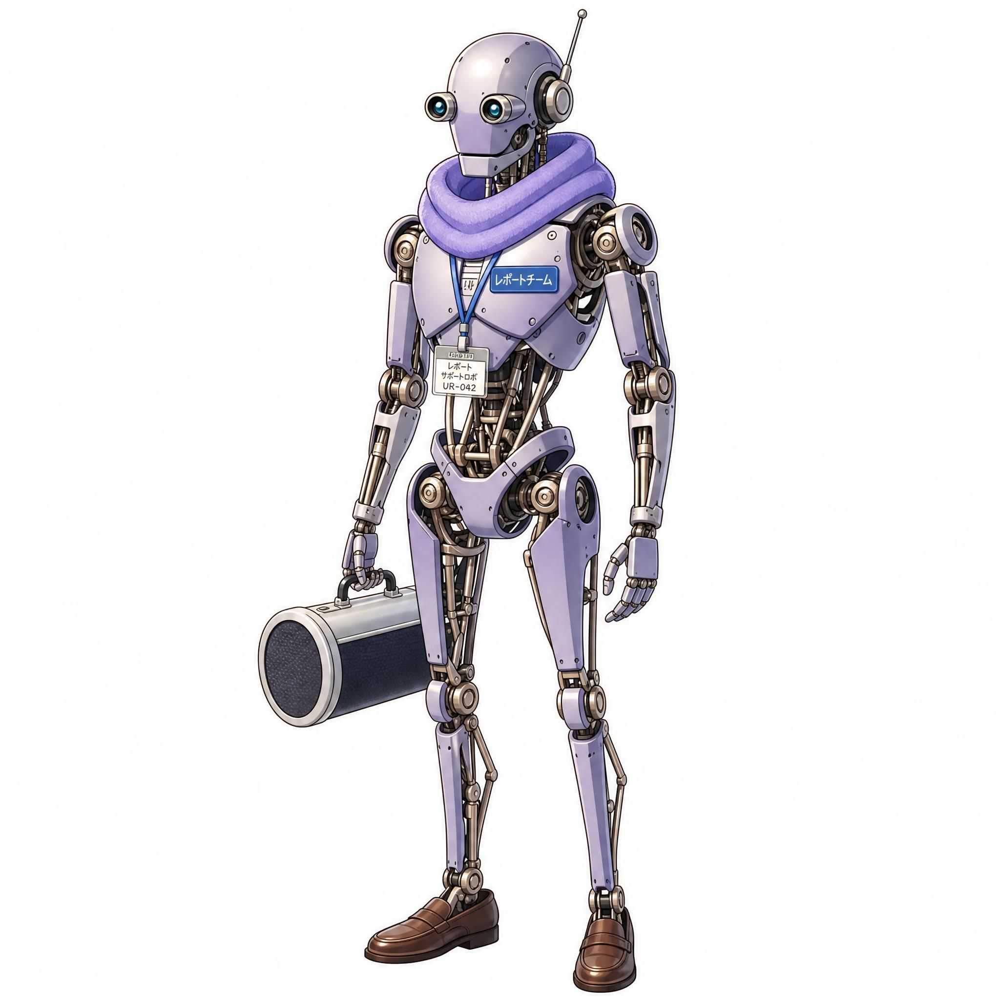
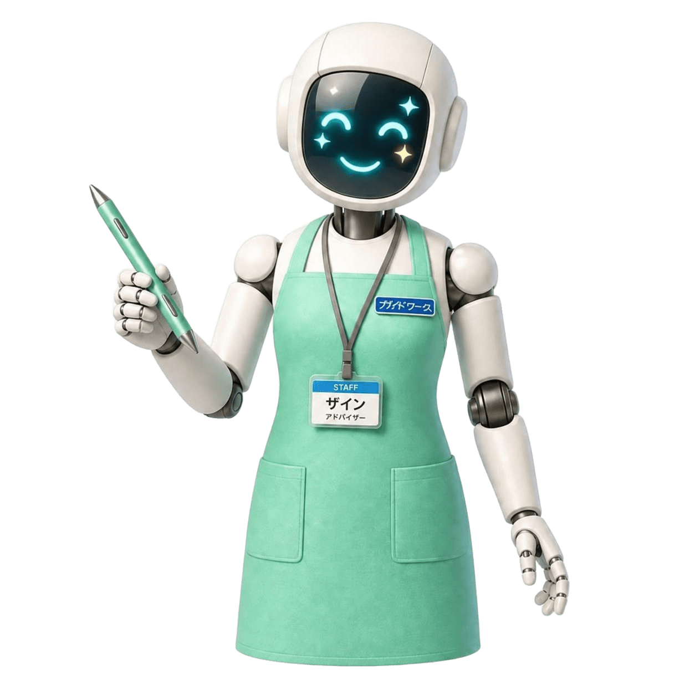
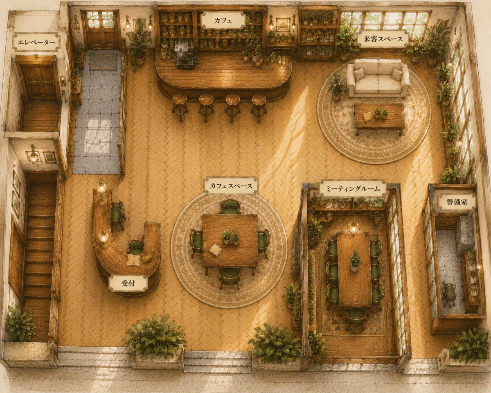

AIエージェント
設計・開発
Claude Code を軸にしたカスタムエージェント・スキル設計、業務フローのAI自動化を支援します。 クリニック・訪問看護・介護施設などの医療現場や、1〜5名の小規模チームへの「現場でちゃんと回る」導入設計が得意です。まずは相談だけでも歓迎です。
医療 × AIエージェントコンサルタント ｜ AIライター
医療現場15年の実務経験 × AIエージェント開発。
医療・小規模事業者の業務に合わせて、現場で使われるAIを設計します。
エージェント28体 ・ スキル34本 ・ AI社員76名を設計・運用中
月紫 — Tsukushi —
For You
AIを導入したいけれど、現場に定着する形がわからない方へ。
ツールを増やすことが目的ではありません。業務を一緒に整理し、まずは一つの面倒な作業から、無理なく改善します。
Services
Claude Code を軸にしたカスタムエージェント・スキル設計、業務フローのAI自動化を支援します。 クリニック・訪問看護・介護施設などの医療現場や、1〜5名の小規模チームへの「現場でちゃんと回る」導入設計が得意です。まずは相談だけでも歓迎です。
「実体験で書く」を強みに、一次情報に基づいた信頼性の高い記事をお届けします。 AIを併用しつつ、体験者にしか書けない具体性と読みやすさを両立します。
「何から始めればいいかわからない」に寄り添う、少人数向けのAI活用レクチャー・勉強会。 SHIFT AI 地域アンバサダーとして勉強会・作業会を主催しています。
Use Cases
「AIエージェント」と言われても、何ができるのかわからない。そんな方のために、実際の業務に置き換えてご紹介します。
情報収集、比較、要点整理、社内向けレポートの下書きを効率化します。
記事構成、SNS投稿、メール、案内文をあなたの言葉に合わせて作成します。
メモや会話から記録の下書きを作り、申し送りや共有の負担を軽くします。
定型作業やチェック、資料づくりなど、毎回発生する仕事を仕組み化します。
AI Company
月紫の仕事を支えるのは、役割ごとに設計されたAI社員たち。調査、企画、制作、管理まで、それぞれの得意分野を持つメンバーがチームで動きます。
AI秘書 / 受付
受付、メール仕分け、スケジュール管理。
リサーチ部
ディープリサーチ、調査、レポート作成。

レポートチーム
レポートの章立てと論理構造の設計。
執筆スタジオ
クライアントの目的や読者に合わせた文体で、記事を執筆・編集。

画像スタジオ
Webデザイン、バナー、LP実装。
レポートチーム
レポート本文の執筆。
※AI社員は、あなたの業務に合わせて役割・名前・ワークフローをカスタマイズできます。
Process
内容がまだ曖昧でも大丈夫です。現状を聞きながら、必要な範囲だけをご提案します。
今困っていること、試してみたいことをお聞かせください。
人がやることと、AIに任せられることを一緒に切り分けます。
いきなり大きく変えず、優先度の高い一つの業務から始めます。
使いながら調整し、現場に定着するところまでサポートします。
Works
Featured
エージェント28体・スキル34本・役員14名、総勢76名のAI社員からなる自分だけの会社を設計・構築。 記事制作・リサーチ・レポート作成・日次業務をAIチームで分担し、2Dバーチャルオフィスとして運営しています。
Claude Code / カスタムエージェント設計 / MCP連携 / 業務ワークフロー自動化

LIVE OFFICE →Award
受信トレイ仕分け・メール返信下書き・スケジュール確認・タスク整理を担うAI秘書エージェント。 SHIFT AI ELITEプランの審査で12 / 12点満点・全項目S評価を獲得した代表作。
Claude Code / カスタムエージェント設計 / Gmail MCP / Google Calendar MCP
医療・介護サポートチーム向けに設計した実動プロダクト。Firebase Firestoreによるリアルタイム同期を実装し、Netlifyで公開・運用中。
Firebase Firestore / Netlify / HTML・CSS・JavaScript
SlackからClaude Codeへ指示を送り、クラウドワークス・ランサーズの案件を自動リサーチするBridge Bot。日々の案件探し業務をSlack連携で自動化。
Slack API / Claude Code / 業務自動化ワークフロー
キャンピングカー・アウトドア・ペット系メディアで10本以上の記事を納品。 愛犬（スタンダードプードル）とのキャンピングカー旅の実体験をもとに執筆しています。
SHIFT AI 地域アンバサダー（高知）として、初心者向けのAI活用勉強会・ゆるっと作業会を企画・主催。 資料づくりから当日運営までを一貫して担当しています。
企画 / スライド制作 / 当日ファシリテーション
noteやSubstackで、AI活用の実践記録や医療現場目線のAI導入について発信しています。
About
月紫（つくし）
野村すみれ — Sumire Nomura —
医療×AIエージェントコンサルタント ｜ AIライター
医療事務15年の現役実務経験を持ちながら、AIエージェントの設計・開発とAIライティングで活動しています。
「現場を知らないAI導入は続かない」——医療現場で長年働いてきたからこそ、
使う人の目線に立った、無理のないAI活用を設計します。
キャンピングカーで愛犬と旅をしながら働くワークスタイルも、私の発信のひとつです。
Contact
AIエージェント開発のご相談、記事執筆のご依頼、
「まずは話を聞いてみたい」も歓迎です。
初回相談30分・オンライン対応可。ご相談内容がまだ曖昧でも大丈夫です。
末永くお付き合いできるお取引を目指しております。